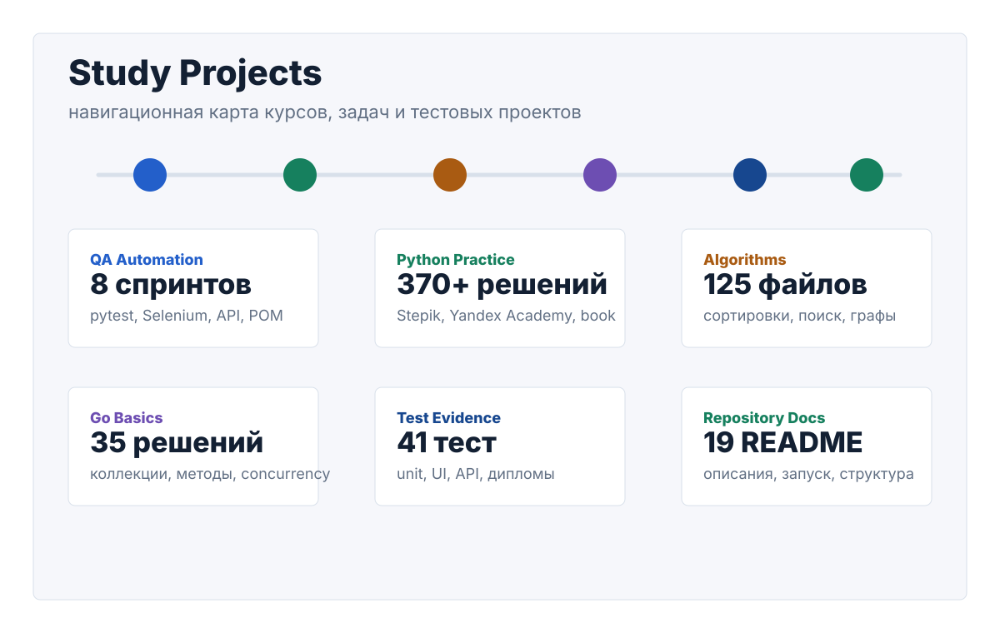

Учебный репозиторий
Карта пройденных курсов, задач и проектов
Репозиторий собран из решений по Python, Go, алгоритмам и автоматизации тестирования. Эта страница превращает набор папок в понятный маршрут: что пройдено, где лежит код, какие сценарии покрыты тестами и какие темы уже отработаны.

Состояние проекта
Обзор прогресса
Python core
Синтаксис, функции, коллекции, ООП, файлы, исключения.
Автоматизация QA
pytest, Selenium, Page Object, API-тесты, Allure.
Алгоритмы
Сложность, структуры данных, сортировки, поиск, динамика, графы.
Go basics
Основы языка, коллекции, строки, методы, конкурентность.
Навигация
Каталог учебных разделов
Фильтры и поиск работают по названию курса, темам, папкам и реализованным задачам. В каждой карточке есть прямой переход к исходникам.
Демонстрация материала
Что уже отработано
Тестирование веб-приложений
UI-сценарии Stellar Burgers и Яндекс Самоката, Page Object, фикстуры, локаторы, отчеты Allure.
API-тестирование
Проверки создания курьера, логина, создания заказов и получения списков заказов через requests.
Unit-тесты
Покрытие учебных приложений pytest-тестами, фикстуры, проверки бизнес-логики и отчетность покрытия.
Алгоритмическая база
Структуры данных, сортировки, поиск, динамическое программирование, основы графов и обходы.
Python ООП
Классы, наследование, полиморфизм, инкапсуляция, специальные методы и работа с исключениями.
Go fundamentals
Синтаксис Go, массивы, слайсы, карты, строки, методы, интерфейсы и конкурентность.
Как пользоваться
Запуск и публикация
Локально
Страница статическая и открывается напрямую из файла.
open docs/index.htmlGitHub Pages
Workflow публикует содержимое папки docs при push в main.
Settings -> Pages -> Source: GitHub ActionsТесты проектов
В репозитории уже есть общий runner для подпроектов с зависимостями.
bash scripts/ci_run_all_tests.sh